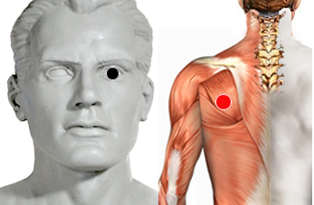

Cataratas
Par
ojo- escápula

Generalidades:
Corrige las cataratas.
Las cataratas se deben a que con la edad avanzada el cristalino del ojo va perdiendo su trasparencia, las proteínas que lo forman se van degradando, esto puede ser causado por varios factores como:
Las cataratas aumentan con le edad en forma lenta y gradual y se puede reducir su avance con hábitos saludables: ejercicio, alimentación, relajamiento, protejer la visión con anteojos. El mayor riesgo de los adultos mayores que padecen esta enfermedad es el ser víctimas de accidentes a causa de su visión reducida.
También revisar el par Polígono de Willis: Reovirus.
Antes del descubrimiento de este par la única opción para corregirla era la cirugía.